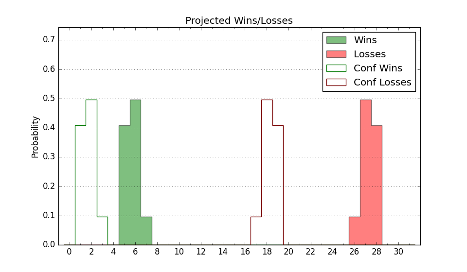

| Home | Game Probabilities | Conferences | Preseason Predictions | Odds Charts | NCAA Tournament |
| City: | Fresno, California | |
| Conference: | Mountain West (10th)
| |
| Record: | 1-17 (Conf) 5-26 (Overall) | |
| Ratings: | Comp.: -7.8 (245th) Net: -7.8 (245th) Off: 98.7 (304th) Def: 106.5 (181st) SoR: 0.0 (110th) |
| Remaining | ||||||
|---|---|---|---|---|---|---|
| Date | Opponent | Win Prob | Pred. | |||
| 3/4 | Wyoming (174) | 49.0% | L 69-70 | |||
| 3/8 | @ San Jose St. (161) | 19.9% | L 69-79 | |||
| Previous | Game Score | |||||
| Date | Opponent | Win Prob | Result | Off | Def | Net |
| 11/8 | Sacramento St. (333) | 83.0% | W 64-57 | -16.2 | 8.4 | -7.8 |
| 11/13 | @UC Santa Barbara (121) | 14.1% | L 86-91 | 9.1 | -1.1 | 8.0 |
| 11/16 | @Cal St. Bakersfield (248) | 35.8% | L 56-74 | -26.1 | 5.5 | -20.6 |
| 11/20 | Prairie View A&M (353) | 88.7% | W 94-83 | 1.2 | -7.9 | -6.8 |
| 11/23 | @Long Beach St. (299) | 47.3% | W 72-69 | -1.7 | 11.4 | 9.7 |
| 11/26 | @Washington St. (108) | 12.1% | L 73-84 | -4.5 | 9.3 | 4.9 |
| 11/27 | (N) Washington St. (108) | 20.2% | L 73-84 | -8.6 | 8.8 | 0.1 |
| 11/27 | California Baptist (168) | 47.0% | L 81-86 | -8.2 | 0.8 | -7.3 |
| 11/28 | (N) California Baptist (168) | 32.5% | L 81-86 | -6.1 | 3.9 | -2.2 |
| 12/4 | San Diego St. (53) | 12.6% | L 62-84 | -7.4 | -2.5 | -9.9 |
| 12/7 | @Santa Clara (51) | 3.9% | L 66-81 | -3.3 | 11.2 | 7.9 |
| 12/11 | @BYU (19) | 1.9% | L 67-95 | 1.7 | 6.1 | 7.8 |
| 12/14 | San Diego (286) | 72.6% | W 73-65 | -2.6 | 5.8 | 3.2 |
| 12/21 | California Baptist (168) | 47.0% | L 69-86 | 2.3 | -25.6 | -23.4 |
| 12/28 | @UNLV (94) | 9.8% | L 77-87 | 23.5 | -14.1 | 9.4 |
| 12/31 | New Mexico (48) | 11.7% | L 89-103 | 12.8 | -7.2 | 5.6 |
| 1/4 | @Utah St. (43) | 3.5% | L 83-89 | 18.5 | 9.4 | 27.9 |
| 1/7 | @Colorado St. (58) | 5.0% | L 64-91 | 0.3 | -6.7 | -6.5 |
| 1/11 | Nevada (64) | 16.9% | L 66-77 | -7.5 | 7.5 | -0.0 |
| 1/17 | Air Force (287) | 72.6% | W 74-65 | 13.1 | -11.3 | 1.8 |
| 1/20 | @New Mexico (48) | 3.8% | L 67-95 | -2.6 | 4.6 | 2.0 |
| 1/25 | Colorado St. (58) | 15.3% | L 64-69 | 9.2 | -1.5 | 7.6 |
| 1/28 | @Wyoming (174) | 22.0% | L 72-83 | 2.8 | -10.5 | -7.7 |
| 2/1 | @Boise St. (37) | 3.0% | L 60-82 | 2.2 | 0.1 | 2.3 |
| 2/4 | San Jose St. (161) | 45.8% | L 91-94 | -6.2 | -2.4 | -8.6 |
| 2/7 | Utah St. (43) | 10.9% | L 81-89 | 12.8 | -6.8 | 6.0 |
| 2/10 | @Nevada (64) | 5.6% | L 69-94 | 7.0 | -16.3 | -9.3 |
| 2/15 | UNLV (94) | 27.1% | L 51-52 | -16.2 | 25.6 | 9.4 |
| 2/18 | @San Diego St. (53) | 4.1% | L 60-83 | 3.6 | -13.2 | -9.6 |
| 2/22 | @Air Force (287) | 43.8% | L 69-72 | 1.6 | 0.7 | 2.3 |
| 3/1 | Boise St. (37) | 9.5% | L 61-66 | 8.7 | 3.5 | 12.2 |
| Stats & Trends | |||||
|---|---|---|---|---|---|
| Current | Day | Week | Month | Season | |
| Composite | -7.8 | +0.0 | +0.3 | +0.2 | -2.1 |
| Comp Rank | 245 | +1 | +7 | +2 | -33 |
| Net Efficiency | -7.8 | +0.0 | +0.3 | +0.3 | -- |
| Net Rank | 245 | +1 | +7 | +4 | -- |
| Off Efficiency | 98.7 | +0.0 | +0.2 | +0.7 | -- |
| Off Rank | 304 | -- | +4 | -1 | -- |
| Def Efficiency | 106.5 | -0.0 | +0.1 | -0.5 | -- |
| Def Rank | 181 | +1 | +3 | +4 | -- |
| SoS Rank | 74 | +1 | -6 | -13 | -- |
| Exp. Wins | 5.7 | -0.0 | -0.1 | -1.4 | -4.4 |
| Exp. Conf Wins | 1.7 | -0.0 | -0.1 | -1.4 | -3.4 |
| Conf Champ Prob | 0.0 | -- | -- | -- | -0.1 |

| Advanced Stats | ||
|---|---|---|
| Stat | Value | Rank |
| Off Eff FG % | 0.473 | 297 |
| Off Ast Ratio | 0.121 | 327 |
| Off ORB% | 0.266 | 246 |
| Off TO Rate | 0.149 | 188 |
| Off FT Ratio | 0.339 | 147 |
| Def Eff FG % | 0.516 | 191 |
| Def Ast Ratio | 0.158 | 279 |
| Def ORB% | 0.309 | 263 |
| Def TO Rate | 0.154 | 127 |
| Def FT Ratio | 0.224 | 5 |